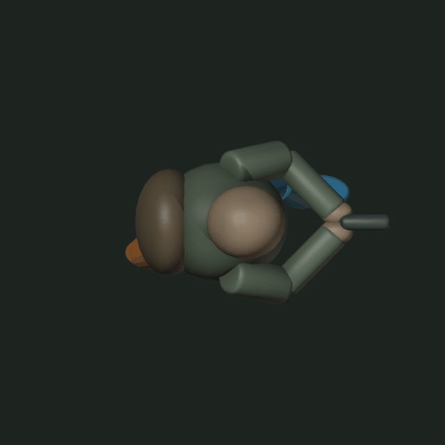
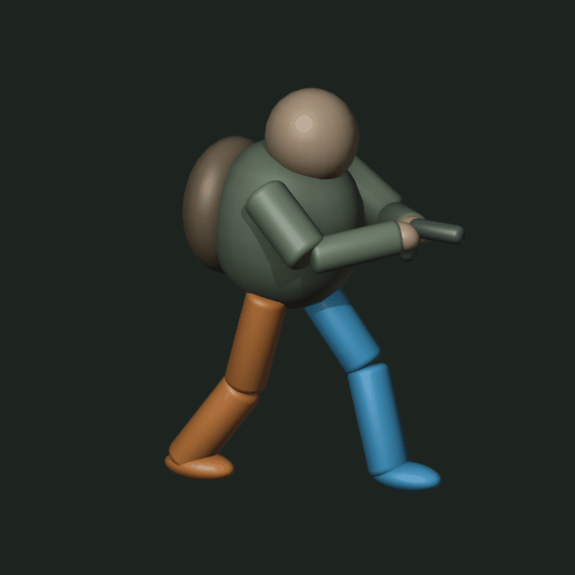

Direita laranja · Esquerda azul. Tronco e braços fixos. A câmera de cima mostra o encurtamento e a ocultação das pernas pelo corpo.


Abrir arquivo Blender · Ver poses principais
Estudo de movimento com formas simples. Sem integração à Unity.